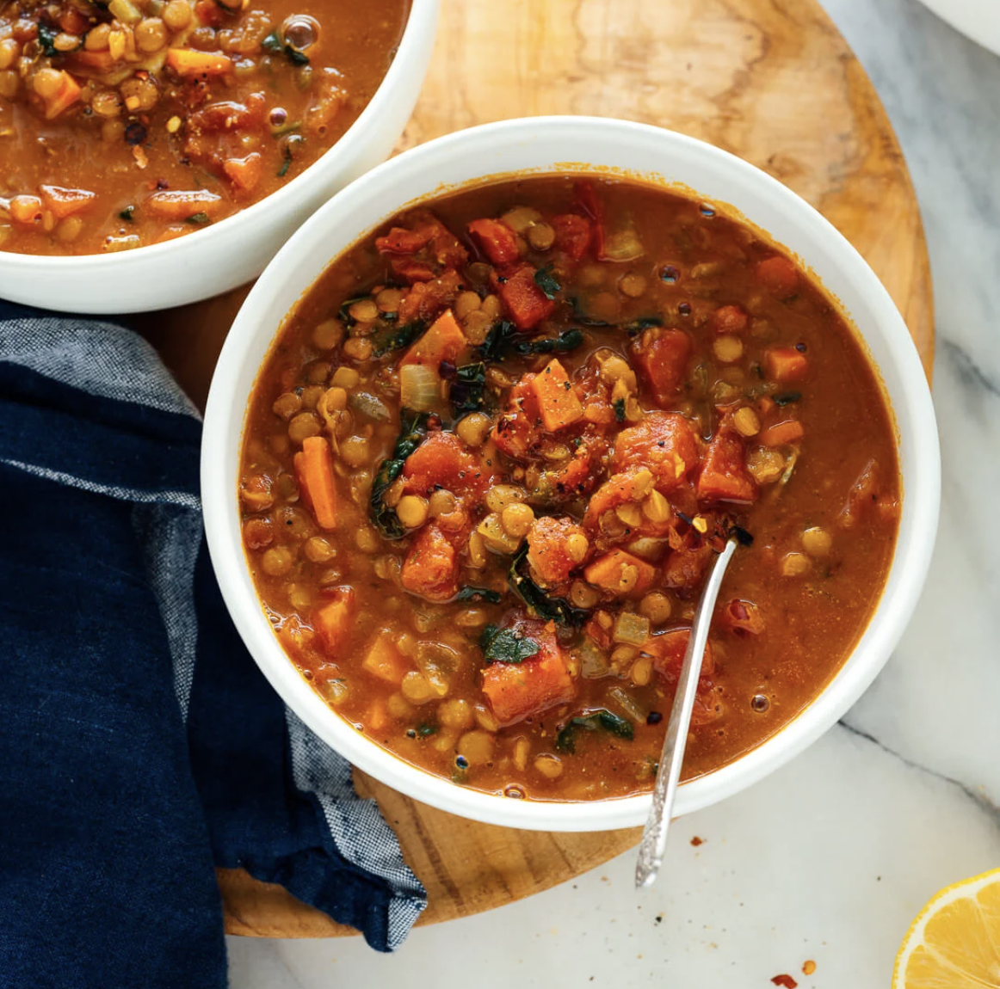

Lentil Soup

Description
This healthy lentil soup recipe comes together quickly with pantry ingredients.
Simple spices, fresh greens and a squeeze of lemon make it the best! Vegan.
Ingredients
- ¼ cup extra virgin olive oil
- 1 medium yellow or white onion, chopped
- 2 carrots, peeled and chopped
- 4 garlic cloves, pressed or minced
- 2 teaspoons ground cumin
- 1 teaspoon curry powder
- ½ teaspoon dried thyme
- 1 large can (28 ounces) diced tomatoes, lightly drained
- 1 cup brown or green lentils, picked over and rinsed
- 4 cups vegetable broth
- 2 cups water
- 1 teaspoon salt, more to taste
- Pinch of red pepper flakes
- Freshly ground black pepper, to taste
- 1 cup chopped fresh collard greens or kale, tough ribs removed
- 1 to 2 tablespoons lemon juice (½ to 1 medium lemon), to taste
Home